This project turns two Solidity smart contracts (an ERC-721 logo registry and an ERC-20 share token) into a website that anyone can use. A visitor can drop in a logo file and instantly learn whether it is the real ALU logo, and ALU staff can connect a wallet to register assets and hand out ownership shares. The problem it solves is trust: a logo is just a file anyone can copy or edit, so people need a simple, public, tamper-proof way to check one.
In Formative 1 the ALU logo's SHA-256 fingerprint was stored on a local Ethereum blockchain, and 1,000,000 ALUT tokens were issued to represent ownership of it. That works, but only for someone who can open a terminal and run Hardhat commands. A student, a partner organisation or a journalist cannot do that. The smart contracts also have no screen: nothing displays "this logo is fake" in words a normal person understands.
The dApp fills that gap. It is the front door to the contracts: it computes file fingerprints inside the browser, talks to the blockchain through a wallet, and shows results in plain language, with colours and icons for non-technical users.
Reads (Verify page, balances, holder list) go straight from the browser to the node through a plain ethers.js JsonRpcProvider. Writes (register an asset, distribute shares) are built by the browser, handed to the wallet through window.ethereum (EIP-1193), signed there with the user's private key, and then broadcast.
The code is split into three layers: deployment.js (generated by deploy.js: addresses, ABIs, network), alu.js (all logic, no page code, so the tests can import it) and app.js (screens and wallet handling). There is no server of my own and no framework; the site is static files.
The navigation has Verify, Register, My Assets, Dashboard, Ledger and a Refresh button that reloads the current page.
The Connect Wallet button sits in the header of every page. After connecting it shows the shortened address (0x19ef...AD27) and the ALUT balance, plus a Disconnect button. A Refresh button in the navigation reloads the current page. If no wallet is installed a banner explains that MetaMask or Coinbase Wallet is needed and that verification still works without one. If the wallet is on the wrong network, a banner offers a "Switch network" button. The screenshot shows MetaMask (Account 2) connected on Sepolia, with the address and 1,000,000 ALUT balance in the header.
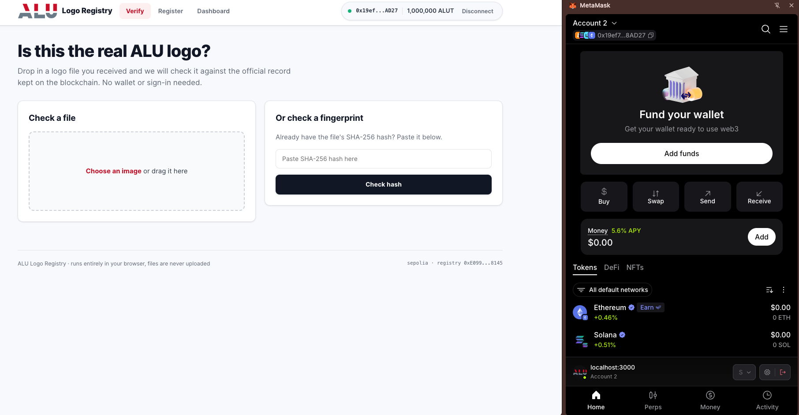
The visitor drops an image or pastes a hash. The result is a big green check with "Logo Verified: This is the authentic ALU logo" and the registered name, date and wallet, or a red warning "This logo has been modified". No hex strings are shown in the result.
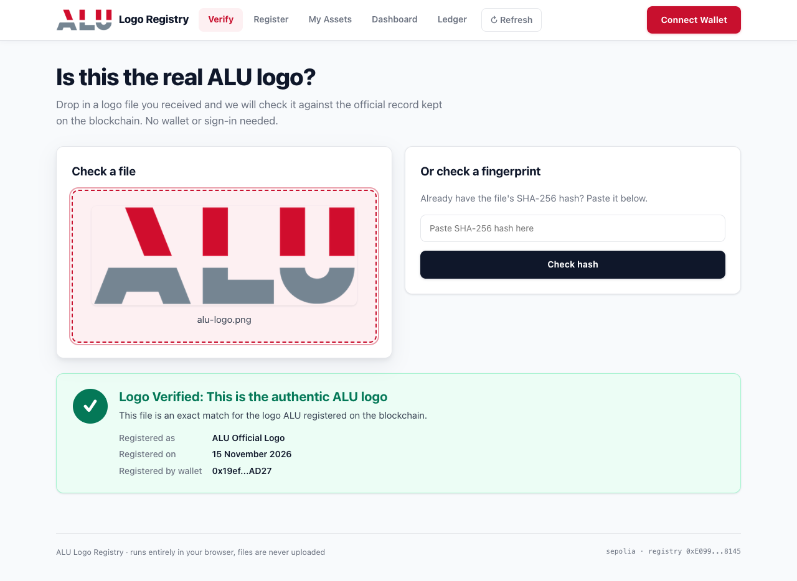
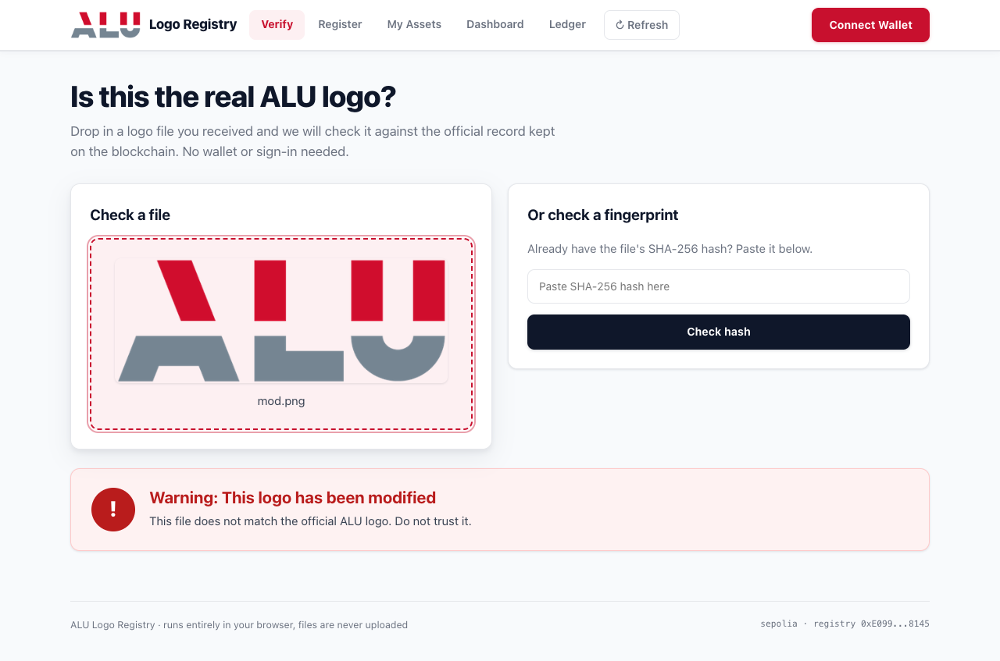
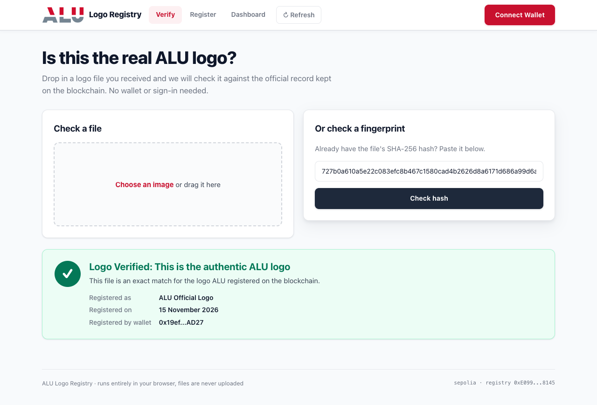
The user picks an image; the page shows a preview and the computed SHA-256 as a bytes32 value, and pre-fills the form. After entering a name and file type and clicking Register, the wallet asks for approval; when the transaction is confirmed the page shows the new token ID. Registering a duplicate shows a clear message instead of a raw error.
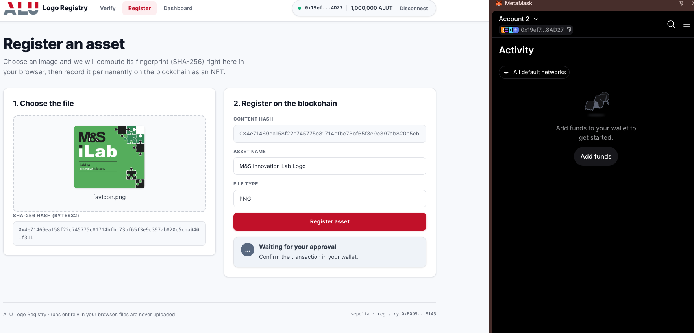
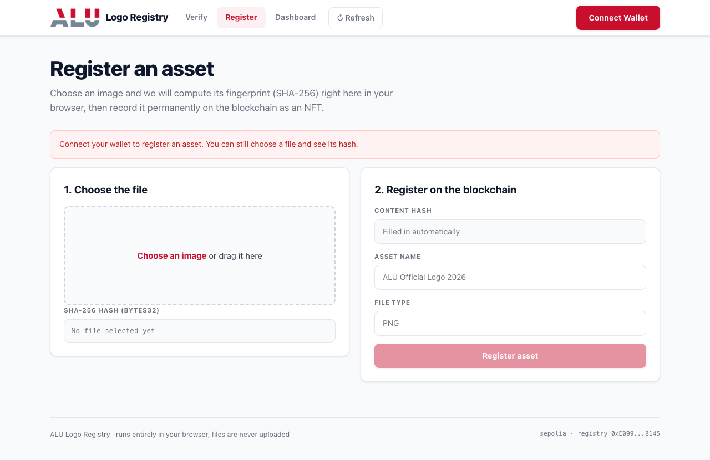
The page lists the assets the connected wallet owns (it finds them with ownerOf() and getAsset()), or every registered asset when "Show all registered assets" is ticked. Each card has a thumbnail, name, NFT number, file type, registration date and fingerprint, plus View (full-size pop-up) and Download. The blockchain stores only the fingerprint, name and owner, so the file itself is kept in the user's browser (IndexedDB) when they register it; nothing is uploaded. Before every view or download the file is hashed again and compared with the on-chain fingerprint, and a green "Verified" message is shown, so a changed file is refused. For assets registered earlier, Attach file accepts the original file only if its hash matches. The official ALU logo ships with the site and is restored automatically after the same hash check.
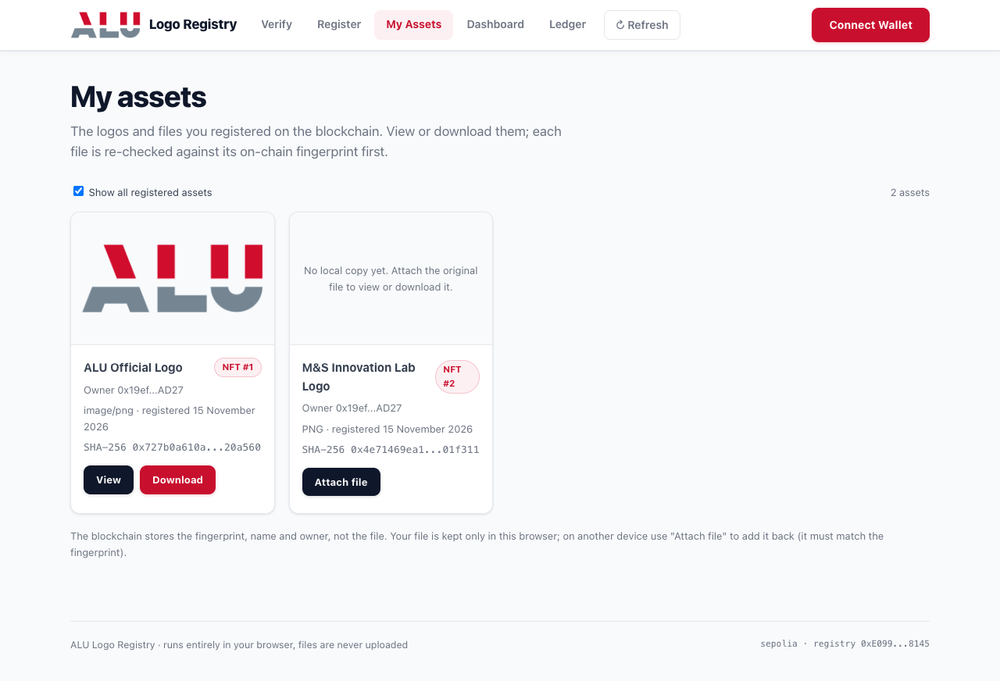
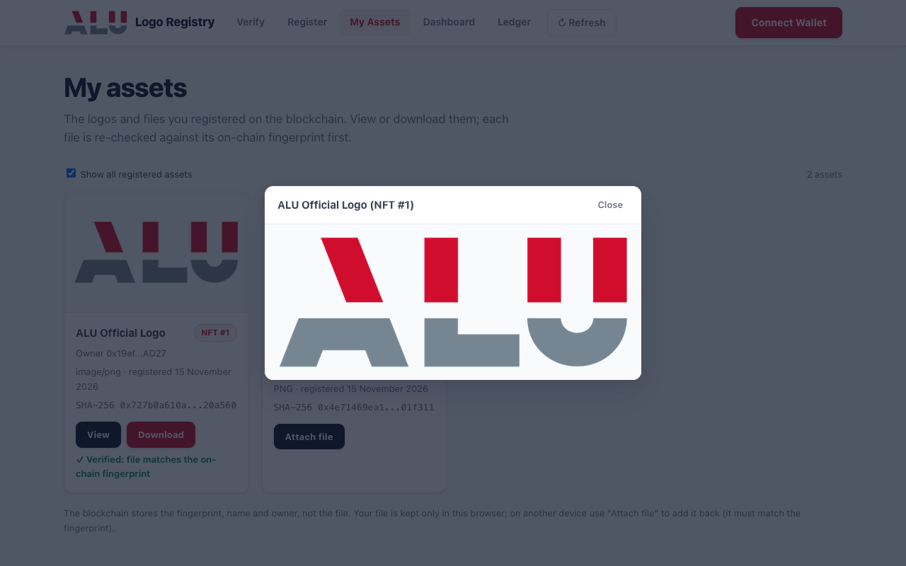
The Ledger records every step as a ledger, in two parts. The on-chain ledger reads the AssetRegistered and ALUT Transfer events straight from Sepolia (registrations, the initial mint and every share transfer) and shows block number, time, type, details, transaction hash with success status and gas, and the block hash with its parent hash, so the rows visibly link block to block. Blocks and transactions link to Etherscan. The activity log records each step taken in the browser (wallet connection, hashing, verification, approval requested, transaction signed and broadcast, confirmed, errors). Every entry stores the SHA-256 of the previous entry, like a small blockchain, so editing or deleting an old entry is detected and shown as "Chain broken at entry #N". The log can be exported as JSON.
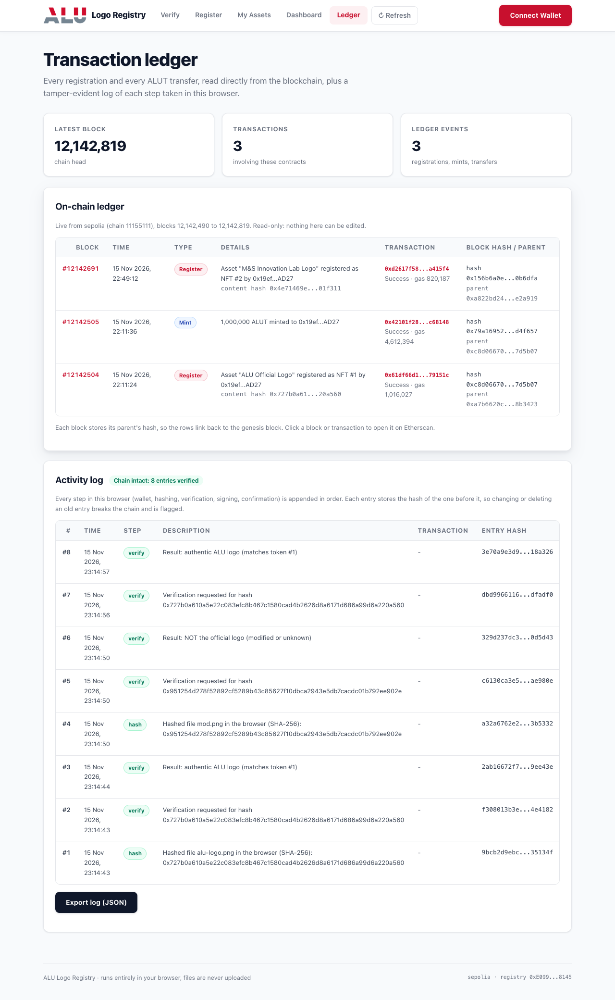
registerAsset() starts with require(!hashRegistered[contentHash], "Asset already registered: duplicate content hash"). The condition fails, the transaction reverts, no NFT is minted, no state changes, and the sender only loses the gas used up to that point. The dApp checks hashRegistered() first (a free read) so the user is told before being asked to sign.registerAsset on this contract address with this name, type and hash, and to pay the network fee (gas) for it. They are also agreeing that it is permanent: once confirmed, it cannot be undone and the NFT is minted to their wallet. The wallet shows the destination and fee so they can check before signing.Clicking a holder row reveals the full wallet address with a Copy button and a link to Etherscan. It shows the total supply (1,000,000), the connected wallet's balance and its ownership percentage from ownershipPercentage(), and a table of the owner and three example stakeholder wallets (Faculty Board, Student Council, Alumni Fund). On the Sepolia deployment the owner currently holds all 1,000,000 ALUT until shares are distributed. The owner also sees the distribution form.
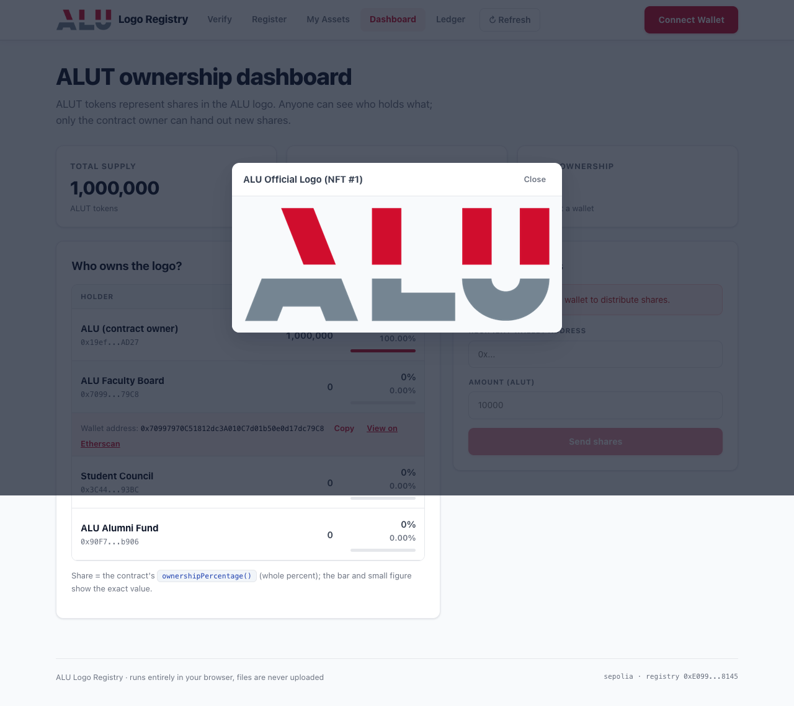
These are the four pieces of code that make the dApp work, in the order a request travels through them.
contracts/ALUAssetRegistry.solregisterAsset rejects a hash that was already registered, records the asset, mints the NFT and emits an event. verifyLogoIntegrity is a view function, so checking a logo is free and needs no wallet.
function registerAsset(string calldata name, string calldata fileType, bytes32 contentHash)
external returns (uint256 tokenId)
{
require(!hashRegistered[contentHash], "Asset already registered: duplicate content hash");
_tokenCounter++;
tokenId = _tokenCounter;
_assets[tokenId] = AssetMetadata(name, fileType, contentHash, msg.sender, block.timestamp);
hashRegistered[contentHash] = true;
_safeMint(msg.sender, tokenId);
emit AssetRegistered(tokenId, msg.sender, contentHash, name);
}
function verifyLogoIntegrity(uint256 tokenId, bytes32 contentHash)
external view returns (bool authentic, string memory message)
{
_requireOwned(tokenId);
if (_assets[tokenId].contentHash == contentHash) return (true, "Logo is authentic.");
return (false, "Warning: logo does not match.");
}
Each asset is a struct stored per token ID. A mapping from hash to bool makes the duplicate check a single cheap lookup, and the event lets the website and the Ledger read what was registered without scanning storage.
contract ALUAssetRegistry is ERC721 {
struct AssetMetadata {
string name; // e.g. "ALU Official Logo"
string fileType; // e.g. "image/png"
bytes32 contentHash; // SHA-256 digest of the file
address registeredBy; // wallet that registered the asset
uint256 registeredAt; // Unix timestamp
}
uint256 private _tokenCounter;
mapping(uint256 => AssetMetadata) private _assets;
mapping(bytes32 => bool) public hashRegistered;
event AssetRegistered(uint256 indexed tokenId, address indexed registeredBy, bytes32 contentHash, string name);
constructor() ERC721("ALU Asset Registry", "ALUA") {}
function getAsset(uint256 tokenId) external view returns (AssetMetadata memory) {
_requireOwned(tokenId);
return _assets[tokenId];
}
}
ownerOf), which the My Assets page uses.require comes first, all state is written before _safeMint, and the event is emitted last, so a receiving contract cannot re-enter with half-written state.calldata and bytes32: name and fileType are read straight from the transaction data (cheaper than copying to memory), and the 32-byte SHA-256 fits exactly in one bytes32 slot.contracts/ALULogoToken.sol (Solidity)ALUT is an ERC-20 where the whole supply is minted to the owner once, in the constructor. Only the owner can hand out shares, enforced by onlyOwner from OpenZeppelin's Ownable. The token has 0 decimals so one token is exactly one share and the percentages are whole numbers.
contract ALULogoToken is ERC20, Ownable {
uint256 public constant TOTAL_SUPPLY = 1_000_000;
constructor(address logoOwner) ERC20("ALU Logo Token", "ALUT") Ownable(logoOwner) {
_mint(logoOwner, TOTAL_SUPPLY);
}
function decimals() public pure override returns (uint8) { return 0; }
function distributeShares(address recipient, uint256 amount) external onlyOwner {
require(amount > 0, "Amount must be greater than zero");
_transfer(owner(), recipient, amount);
}
function ownershipPercentage(address account) external view returns (uint256) {
return (balanceOf(account) * 100) / totalSupply(); // integer division
}
}
onlyOwner checks msg.sender == owner() before the function body runs; anyone else reverts with OwnableUnauthorizedAccount, so the website's disabled form is only a convenience._transfer(owner(), ...) always moves tokens from the owner, so the owner cannot be tricked into spending a different account's balance; an amount above the owner's balance reverts inside OpenZeppelin.ownershipPercentage rounds down (a 0.4% holder shows 0%); the dashboard therefore also shows the exact percentage computed in the browser.balanceOf * 100 cannot silently wrap.scripts/deploy.jsThe script deploys the registry, registers the ALU logo straight away as token 1 (hashing alu-logo.png with Node's crypto), deploys the token with the deployer as owner, then writes the addresses, ABIs and deploy block to deployment.js. On the local chain it also sends demo shares to three wallets; on Sepolia those example holders start with zero until the owner distributes shares.
const registry = await hre.ethers.deployContract("ALUAssetRegistry");
await registry.waitForDeployment();
await (await registry.registerAsset("ALU Official Logo", "image/png", hash)).wait(); // token ID 1
const token = await hre.ethers.deployContract("ALULogoToken", [deployer.address]); // owner gets 1,000,000 ALUT
await token.waitForDeployment();
| Contract | Function / event | Type | Who can call | Used by the dApp for |
|---|---|---|---|---|
| ALUAssetRegistry (ERC-721) | registerAsset(name, fileType, hash) | transaction (gas) | anyone | Register page |
verifyLogoIntegrity(tokenId, hash) | view (free) | anyone | Verify page | |
getAsset(tokenId), ownerOf(tokenId) | view (free) | anyone | Verify result, My Assets | |
hashRegistered(hash) | view (free) | anyone | duplicate pre-check | |
event AssetRegistered | event | - | token ID after signing, Ledger | |
| ALULogoToken (ERC-20, ALUT) | distributeShares(recipient, amount) | transaction (gas) | owner only | Dashboard send form |
totalSupply(), balanceOf(account) | view (free) | anyone | Dashboard, header balance | |
ownershipPercentage(account) | view (free) | anyone | Dashboard table | |
owner() | view (free) | anyone | enables the owner-only form | |
event Transfer | event | - | Ledger (mint and transfers) |
Both contracts are deployed on Sepolia (registry 0xE0997C14...8145, token 0x10755cC9...66F5) and covered by the 13 Hardhat tests: duplicate rejection, authentic and tampered verification, owner-only distribution, supply and balances, plus the five frontend integration tests.
frontend/js/deployment.jsGenerated by scripts/deploy.js. It holds the network, the two contract addresses, the start block for the ledger and the ABIs copied from Hardhat's build output, so the browser knows how to encode every call: registryAddress 0xE0997C14...8145, tokenAddress 0x10755cC9...66F5, deployBlock, registryAbi and tokenAbi.
frontend/js/alu.jsThe file is hashed in the browser with the Web Crypto API; the result is already a valid bytes32. registerAsset checks for a duplicate first (a free read), then sends the transaction, waits for it to be mined and reads the token ID from the event.
async function hashFile(file) {
const bytes = await file.arrayBuffer();
const digest = await crypto.subtle.digest("SHA-256", bytes);
const hex = Array.from(new Uint8Array(digest), (b) => b.toString(16).padStart(2, "0")).join("");
return "0x" + hex;
}
const tx = await registry.registerAsset(name.trim(), fileType.trim(), contentHash);
const receipt = await tx.wait(); // wallet signs; wait until it is mined
const event = receipt.logs.map((log) => registry.interface.parseLog(log))
.find((e) => e && e.name === "AssetRegistered");
return { tokenId: event.args.tokenId, txHash: receipt.hash };
frontend/js/app.jsReads use a plain JSON-RPC provider, so they need no wallet. Connecting a wallet asks MetaMask for accounts through window.ethereum, wraps it in an ethers.js BrowserProvider, and builds contract objects on the signer, so every write opens the wallet for approval.
const readProvider = new ethers.JsonRpcProvider(D.network.rpcUrl, D.network.chainId, { staticNetwork: true });
const registryRead = new ethers.Contract(D.registryAddress, D.registryAbi, readProvider);
const accounts = await window.ethereum.request({ method: "eth_requestAccounts" });
const browserProvider = new ethers.BrowserProvider(window.ethereum);
wallet.signer = await browserProvider.getSigner(accounts[0]);
wallet.registry = new ethers.Contract(D.registryAddress, D.registryAbi, wallet.signer);
How connecting works. Wallets such as MetaMask and Coinbase Wallet inject an object called window.ethereum into the page. Clicking Connect Wallet calls eth_requestAccounts; the wallet pops up and the user approves sharing their address. The app then wraps that object in an ethers.js BrowserProvider, asks it for a Signer, and creates the two contract objects from the signer. The app listens for the wallet's accountsChanged and chainChanged events, so switching account or network rebuilds the connection, and locking the wallet disconnects the page. On load it reconnects quietly if the wallet already trusts the site, unless the user pressed Disconnect.
What ethers.js does. It encodes a call like distributeShares(address,uint256) into the bytes the EVM understands, sends it to the node over JSON-RPC, waits for the receipt, and decodes the answers and event logs back into normal JavaScript values (for example reading the new token ID from the AssetRegistered event).
deploy.js copies the ABIs from Hardhat's build output into deployment.js, so they always match the deployed contracts.view function such as balanceOf) is answered by a node from its current copy of the state. It changes nothing, so it needs no gas, no signature and no wallet. A transaction (such as registerAsset) changes the blockchain state, so every node must execute and record it: it costs gas, must be signed by an account, and is only final after being mined into a block.A2 read test. When the page loads it calls name() on the registry and symbol() on the token; if that fails, it shows a banner saying the chain is unreachable and how to start it. The dashboard's 1,000,000 supply is read from the contract, not typed in.
When a file is chosen, the browser reads its bytes with file.arrayBuffer(), runs crypto.subtle.digest("SHA-256", bytes) (the Web Crypto API built into every modern browser), turns the 32 bytes into hex and adds 0x. That is already a valid bytes32. The hash is then passed to verifyLogoIntegrity(1, hash) on the registry, which compares it to the hash stored for token 1. If it matches, getAsset(1) supplies the name, date and wallet to display. No server is needed because both steps, hashing and checking, run in the browser and the blockchain node answers the question.
view function: it only reads storage and changes nothing. Reads are answered by one node without creating a block, so there is nothing to pay validators for and nothing to sign. The page only needs a read connection to a node, not an account.shasum against the on-chain value. The limit is that it proves "identical to what was registered", so trust also relies on the registered logo (token 1) really being ALU's, which is public and was created by ALU's registering wallet.All numbers come from ALULogoToken: totalSupply(), balanceOf(), ownershipPercentage() and owner(). The percentage is a whole number (integer division in Solidity), so the page also shows the exact value. The distribute form is enabled only when the connected address equals owner(); other wallets see it disabled with an explanation. Before sending, the code checks that the address is valid, the amount is above zero and not greater than the owner's balance, then calls distributeShares(), waits for confirmation and re-reads all balances.
Without the owner wallet connected, the form is disabled and the page explains why (see the dashboard screenshot above).
onlyOwner (from OpenZeppelin's Ownable) runs before the function body and checks msg.sender == owner(). The EVM knows the sender because the transaction is signed with their key, so it cannot be faked. If anyone else calls it, the contract reverts with OwnableUnauthorizedAccount(address); nothing is transferred and the caller just wastes gas. The dApp stops it earlier too (disabled form and a check in alu.js), but the contract is the real protection, because anyone could bypass a website and call the contract directly.ERC20Votes token (balance snapshots/checkpoints plus delegation, so votes cannot be counted twice by moving tokens around), and add a governor contract (for example OpenZeppelin Governor) that creates proposals, counts votes weighted by each wallet's checkpointed balance at the proposal's start block, and executes the result. Holders would also need to delegate (even to themselves) to activate their votes, and onlyOwner actions would be moved under the governor.All 13 tests pass with npx hardhat test: 8 from Formative 1 and 5 new frontend integration tests that import the real frontend/js/alu.js and run it against freshly deployed contracts.
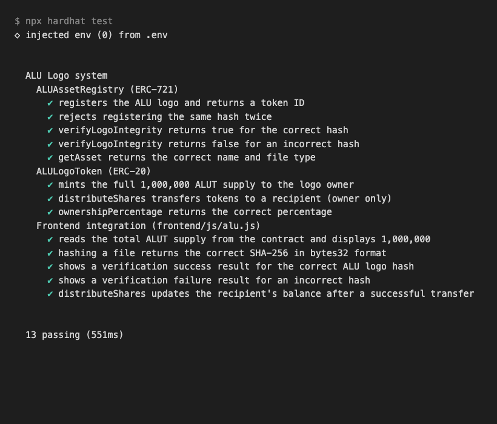
npx hardhat test: 13 passing.Besides the automated tests I ran the dApp in a browser against the contracts deployed on the Sepolia testnet: verifying the real logo, a tampered copy and a pasted hash (screenshots above), connecting a real MetaMask wallet, viewing the live dashboard, the ledger and My Assets pages. Earlier, on a local Hardhat chain, I also exercised registering, the duplicate rejection, distributing shares and the non-owner block.
I learned that a smart contract only becomes a product when someone designs the front door: the ABI and address connect the two, reads and writes are very different (free and anonymous versus signed and paid), and good error messages matter as much as the contract logic because raw revert text means nothing to a user. Hashing in the browser also showed me how much can be done without a back end.
Limitations: The automated tests use a stand-in wallet object; the real MetaMask connection and approval were checked manually on Sepolia. Files re-saved or re-compressed get a different hash and are reported as modified. With more time I would add WalletConnect, show a full transaction history, support multiple official assets beyond token 1, reduce rounding by using basis points, and add token-weighted voting with ERC20Votes.
| GitHub repository | https://github.com/goldensash1/Individual-Assignment-2-DApp-Integration-with-Smart-Contract |
|---|---|
| Sepolia — ALUAssetRegistry | 0xE0997C144615A152610aBA6F0FA13506F1c48145 |
| Sepolia — ALULogoToken | 0x10755cC9D4731FEcADc8Af023176a50c0b8266F5 |
| Contracts | ALUAssetRegistry (ERC-721) and ALULogoToken (ERC-20, ALUT) |
| Video demonstration | ADD YOUR VIDEO LINK HERE (screen recording of the dApp working end-to-end) |
Logo SHA-256 registered as token ID 1: 727b0a610a5e22c083efc8b467c1580cad4b2626d8a6171d686a99d6a220a560. Libraries: ethers.js 6.17.0 (MIT), OpenZeppelin Contracts 5.1.0 (MIT). Node 24.14.0, Hardhat 2.29.1.